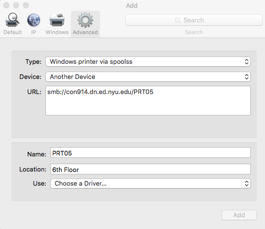
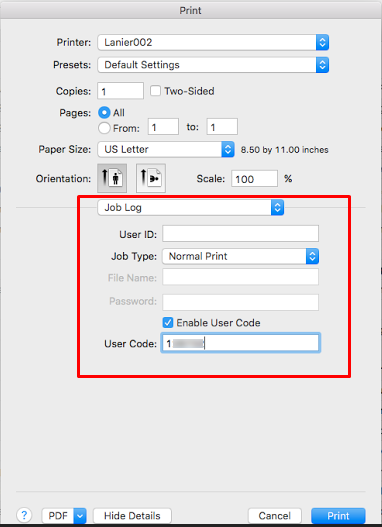
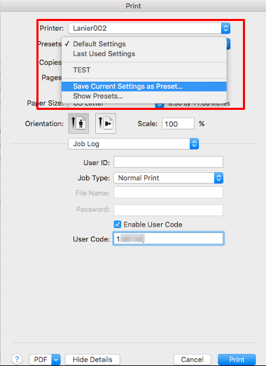

How do I install a printer on a Windows computer?
How do I install a printer on a Mac computer?
How do I install a printer on a Windows computer?
- Open "Compatibility View Settings" from the settings menu.
- Under “Add this website:” enter nyu.edu and click “Add”.
- Open "Internet Options" from the settings menu.
- Open the Security tab and unselect Enable Protected Mode. Close Internet Explorer.
- A popup box will prompt you for authentication. Make sure “Domain” says “AD”. If it does not enter “AD\” before putting in your username. Proceed to log in with your NYU Credentials.
- Click on the Connect option to the left. Click on yes to proceed and add the printer.
- You will see a confirmation page after the installation is complete.
How do I install a printer on a Mac computer
- Click on "Print & Scan"
- Click on "+" underneath the list of printers and select "Add Printer or Scanner..." in the menu that appears.
- An "Add" window will appear. If there is not already an "Advanced" button in its toolbar (on top, alongside "Default", "Fax", "IP", etc.), you'll need to customize the toolbar. Control + click on the toolbar area and select "Customize Toolbar...".
- Drag the "Advanced" item up onto the toolbar and click "Done".
- Click on the "Advanced" button.
- Enter/select the following:
- Type: “Windows printer via spoolss"
- Device: "Another Device"
- URL: smb://con914.dn.ed.nyu.edu/
- Name: Enter a descriptive name to remember what the printer is.
- Location: Enter the location for your reference.
- Use: Generic PostScript Printer. (For printers)
- For Lanier copiers follow instructions below
| Printer Location | URL |
| 7th Floor | smb://con914.dn.ed.nyu.edu/PRT063_433_1st_7thFloor_B&W |
| 6th Floor | smb://con914.dn.ed.nyu.edu/PRT005_433_1st_6thFloor_Color |
| 5th Floor | smb://con914.dn.ed.nyu.edu/PRT062_433_1st_5thFloor_B&W |
| 4th Floor | smb://con914.dn.ed.nyu.edu/PRT064_433_1st_4thFloor_B&W |
| LL1 | smb://con914.dn.ed.nyu.edu/PRT145_433_1st_5thFloor_B&W |
- The first time, you will be prompted for your credentials. These are your NYU Home username and password.
- Use the following format for Username: AD\netid and check the box next to “Remember this password in my keychain”
- Enter/select the following:
- Type: “Windows printer via spoolss"
- Device: "Another Device"
- URL: smb://con914.dn.ed.nyu.edu/
- Name: Enter a descriptive name to remember what the printer is.
- Location: Enter the location for your reference.
- Use: Click on “Select Software”, then type in Lanier to filter out the corresponding driver. The chart below lists the model name for each printer.
- 
| Printer Location | URL | Model |
| 7th Floor | smb://con914.dn.ed.nyu.edu/Lanier005_433_1st_7thFloor_B&W | Lanier MP C3503 PS |
| 6th Floor | Not Available | Not Available |
| 5th Floor | smb://con914.dn.ed.nyu.edu/Lanier007_433_1st_5thFloor_B&W | Lanier MP C3503 PS |
| 4th Floor | smb://con914.dn.ed.nyu.edu/Lanier006_433_1st_4thFloor_Color | Lanier MP C4500/LD445c PS |
| LL1 | smb://con914.dn.ed.nyu.edu/Lanier009_LL1_LL1-40_B&W | Lanier MP C3503 PS |
- After adding a Lanier printer you will need to store your copy code. When printing from an application open the System Print Dialogue.
- Change the option from Layout to Job Log.

- Check of the box for Enable User Code and type in your user code.
- 
- Change the Presets option from Default Settings to Save Current Settings as Preset
- 
- Check of the option for All printers and name the Preset Copy Code
- You will need to use the Copy Code preset whenever printing to a lanier.